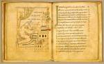

Milo van Sint-Amand, Carmen de sobrietate, en andere teksten. Latijn. Handschrift op perkament, 36 ff., 170 x 135 mm. Sint-Omaars, circa 1000. -- (BPL 190)
De betekenis van het portret van de knielende monnik in zijn cel op fol. 26v wordt duidelijk uit het bijschrift ‘Poeta gratias agit Deo pro expleto opere suo’ (De dichter dankt God voor de voltooiing van zijn werk). Hij blikt op naar Gods hand in de rechterbovenhoek die uit een kerkgebouw naar buiten steekt, gebarend dat het werk aanvaard wordt. Dat het hier gaat om de dichter Milo van Sint-Amand in Henegouwen (gestorven in 872) volgt uit de plaats in het handschrift, namelijk aan het slot van het Carmen de sobrietate van deze auteur.
Een bezittersaantekening aan het einde van het handschrift bewijst dat het in de vijftiende eeuw toebehoorde aan de Benedictijner abdij van Sint Bertijn in het Noord-franse Sint-Omaars. Stilistisch komt de getoonde miniatuur overeen met de productie van het atelier van deze abdij, die aan het einde van de tiende eeuw onder leiding van Odbert van Sint-Omaars uitgroeide tot het belangrijkste centrum van boekkunst van die tijd in Frankrijk.
Literatuur
- A.W. Byvanck, Les principaux manuscrits à peintures conservés dans les collections publiques du Royaume des Pays-Bas, Paris 1931 ( = Bulletin de la Société francaise de reproduction des manuscrits à peintures. 15), p. 77.
- A. Boutemy, ‘Encore un manuscrit decoré par Odbert de Saint-Omers’, in: Scriptorium, 4 (1950), p. 245-246.
| vorige pagina | top pagina |